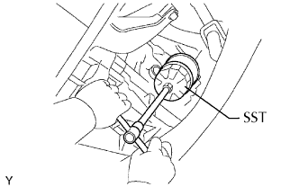
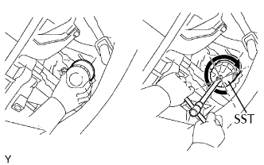

LỌC DẦU > THAY THẾ |
| 1. XẢ DẦU ĐỘNG CƠ |
Tháo nắp lỗ đổ dầu.
Tháo nút xả dầu và xả dầu vào khay chứa.
| 2. THÁO BỘ LỌC DẦU |
|  |
Dùng SST, tháo bộ lọc dầu.
| 3. LẮP BỘ LỌC DẦU |
Kiểm tra và lau sạch mặt lắp của lọc dầu.
Bôi dầu động cơ sạch lên gioăng của lọc dầu mới.
|  |
Vặn nhẹ lọc dầu vào đúng vị trí bằng tay. Hãy xiết nó cho đến khi gioăng tiếp xúc với đế.
Dùng SST, xiết chặt lọc dầu.
Tuỳ thuộc vào khoảng không gian làm việc sẵn có, hãy chọn theo như sau đây.
Nếu đủ không gian, hãy dùng cờlê cân lực để xiết lọc dầu.
| 4. ĐỔ DẦU ĐỘNG CƠ VÀO |
Lau sạch và lắp nút xả dầu cùng với một gioăng mới.
Đổ dầu động cơ mới vào.
| Hạng mục | Điều kiện tiêu chuẩn |
| Xả ra và đổ dầu vào trường hợp có thay lọc dầu | 5.6 lít (5.9 US qts, 4.9 Imp. qts) |
| Xả ra và đổ vào trường hợp không thay lọc dầu | 5.3 lít (5.6 US qts, 4.6 Imp. qts) |
| Đổ khô | 6.3 lít (6.7 US qts, 5.5 Imp. qts) |
Lắp nắp lỗ đổ dầu.
| 5. KIỂM TRA RÒ RỈ DẦU ĐỘNG CƠ |
Khởi động động cơ và kiểm tra rằng không có rò rỉ dầu sau khi tiến hành bảo dưỡng.